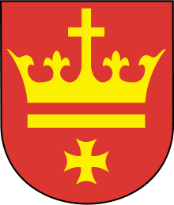
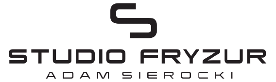
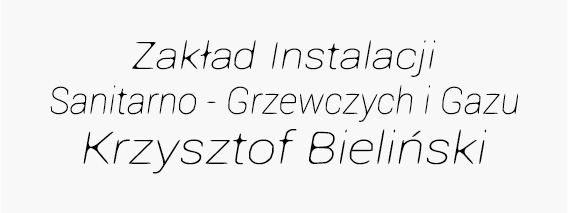

<ion-header transparent>
   
    <ion-navbar transparent>
  
              <button ion-button menuToggle >
                  
              </button>
          
              <div text-center>
                  <h3 ion-text>PARTNERZY</h3>
              </div>
             
              <ion-buttons end>
                  
              </ion-buttons>
  
    </ion-navbar>
  </ion-header>
  
  
    <ion-content padding class="bg-image">

        <h2 text-center>
            
            <h2 class="napis" text-center>Projekt współfinansowany ze środków Gminy Miejskiej Starogard Gdański</h2>
        </h2>

        <h2 text-center>
            
            <h2 class="napis" text-center>Studio Fryzur</h2>
            <h2 class="napis" text-center>Adam Sierocki</h2>
        </h2>

        <h2 text-center>
            
            <h2 class="napis" text-center>Zakład Instalacji</h2>
            <h2 class="napis" text-center>Sanitarno-Grzewczych i Gazu</h2>
            <h2 class="napis" text-center>Krzysztof Bieliński</h2>
        </h2>


    </ion-content>
  